Mapa Egypta
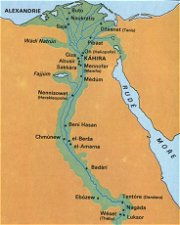
|
EGYPTSKÁ LITERATURA
Staèí pøeletìt Støedozemní moøe a rázem se ocitnete v Egyptì - zemi s tisíciletou tradicí. V�dy� nejstarší písemné památky nalezené na jeho území pocházejí u� z 4. tisíciletí pø.n.l.! Sláva této starovìké øíše trvala s krátkımi pøestávkami a� do doby, kdy Egypt dobyli Arabové (641 n.l.) a pozdìji Turci (1517). Pro Evropany ale zùstával Egypt a� do 19. století tajemnou zemí kdesi za moøem. O jeho "znovuobjevení" se zaslou�il a� slavnı vojevùdce Napoleon Bonaparte, kterı sem vtrhl se svımi vojáky v roce 1798. Kresby pyramid obletìly celı svìt a do Egypta dorazili první vìdci. Vykopávky odhalily nejen další pyramidy, ale také egyptské chrámy, pohøebištì a hlavnì spoustu nápisù a textù, které neumìl nikdo èíst. Teprve po jejich rozluštìní se ukázalo, �e starovìcí Egyp�ané byli nejen vıbornımi staviteli, ale také literáty. Psali básnì, povídky, bajky, pohádky, �ivotopisy, nauènou literaturu atd. Nejvıznamnìjší jsou ale texty nábo�enské. Dávají nám toti� nahlédnout, v co Egyp�ané vìøili. |
Periodizace
Na bøezích africké øeky Nil vznikla jedna z nejstarších starovìkıch civilizací. Podle tradice první faraon Meni sjednotil kolem roku 3000 pø.n.l. Horní a Dolní Egypt a stal se tak vládcem obrovské øíše. Dìjiny starovìkého Egypta vìtšinou dìlíme na Starou øíši (2778-2263 pø.n.l.), Støední øíši (1991-1786 pø.n.l.) a Novou øíši (1580-1085 pø.n.l.).
|
Texty pyramid a rakví
Knihám mrtvıch (Nová øíše) pøedcházely jednotlivé texty rakví (Støední øíše) a texty pyramid (Stará øíše).
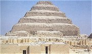
D�óserova pyramida v Sakkáøe.
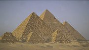
Cheopsova pyramida v Gíze.
|
Posmrtnı �ivot
Pro egyptské nábo�enství je typická víra v posmrtnı �ivot. Nemù�eme se tedy divit, �e ústøedním bodem, ze kterého vycházela egyptská kultura, byla právì smrt. Pyramidy jsou obrovské hrobky egyptskıch panovníkù, slo�itı postup mumifikace slou�il k tomu, aby tìla zemøelıch vydr�ela co nejdéle, to ale nebylo všechno. Pohøební vıbavu zemøelého tvoøily nejen pøedmìty, které mohl po smrti potøebovat, ale také rùzná magická zaøíkadla a návody, které mu mìly usnadnit cestu podsvìtím. Ta byla toti� plná nástrah a bez tzv. knih mrtvıch by duše zemøelého nikdy nedošla do egyptského ráje.
Øíkadlo pro vybídnutí vešebta, aby pracoval za èlovìka v øíši duchù.
N. praví: "Ó vešebte, patøící mnì! A� budu urèen a zavolán, abych konal práce, které jsou konány mu�em v øíši duchù podle jeho povinnosti: odklizování neèistoty, vzdìlávání pole, zavodòování bøehù, pøevá�ení vıchodního písku na západ, pøihlas se za mne, øka: "Zde jsem!"
Dodatek: Poslouchej jen toho, kdo tì vytvoøil, neposlouchej jeho nepøítele!
| |
Vešebti
V hrobkách mizelo obrovské jmìní. Dùkazem je pohøební vıbava nepøíliš vıznamného faraona Tutanchamona. V jeho hrobce, která unikla pozornosti vykradaèù, byly nalezeny stovky zlatıch pøedmìtù. Mezi jinımi i sošky vešebtù. Vešebti byli sluhové, kteøí mìli po "o�ivení" speciálním zaklínadlem za mrtvého pracovat v onom svìtì. Zámo�ní lidé si jich mohli dovolit více, tedy tøeba na ka�dı den jednoho. Aby se vešebti mezi sebou nehádali, kdy má kterı pracovat, mìlo ka�dıch deset sošek svého nadøízeného. Ovšem i ty mìly své šéfy a navíc si musely nìkdy odpoèinout, proto poèet vešebtù neustále narùstal… Kdo nemìl vešebta �ádného, musel pracovat i po smrti!
|
Síò obou pravd
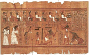
Ilustrace z Knihy mrtvıch. |
Kniha mrtvıch
Bìhem vlády XXVI. dynastie (663-525 pø.n.l.) se ustálila závazná podoba tzv. Knihy mrtvıch (Kniha o zjevování se na svìtle denním). Šlo vlastnì o rozsáhlou sbírku starších zaøíkadel a rad známıch u� z textù pyramid a rakví. Kniha mrtvıch se pøikládala k mumii nebo se vkládala do zvláštní schránky, byla zapsána na papyrovém svitku a obvykle bıvala bohatì ilustrována. Duše zemøelého zde vystupuje jako srdce N-ovo nebo N. Mrtvı musel projít mnoha nástrahami a pou�ít rùzná zaøíkadla (na o�ivení vešebtù, aby mìl vodu a vzduch, aby se mu otevøely správné dveøe atd.). Nakonec dorazil do sínì obou pravd, kde bùh podsvìtí Usirev (Osiris) polo�il na jednu misku vah jeho srdce a na druhou peøíèko. Pokud bylo srdce lehèí (nezatí�ené høíchy), byl mrtvı prohlášen za spravedlivého a mohl zamíøit do obdoby køes�anského ráje. V opaèném pøípadì skonèil v jakémsi pekle, kde musel jíst vıkaly a pít moè… |
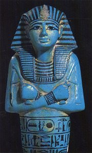 |
Kniha mrtvıch |
|
Pøeèti si obì ukázky z Knihy mrtvıch a nakresli k nim vlastní ilustrace. |
Vlastní �ivotopis Sinuhetùv
|
Vlastní �ivotopis Sinuhetùv (1950 pø.n.l.)
Sinuhet byl vıznamnı královskı úøedník a správce harému. Náhodou se doslechl o vra�dì faraona, na ní� se podílel i harém, a pøesto�e se na zavra�dìní panovníka nepodílel, radìji uprchl z Egypta. Dostává se a� do Sırie, kde se proslaví jako vojevùdce a o�ení se s dcerou místního kní�ete. Stále ale tou�í po návratu do rodného Egypta, kde chce bıt podle všech pravidel pohøben. Naštìstí se novı faraon dozví o Sinuhetovıch zásluhách, a proto�e byl nevinnı, mù�e se vrátit zpìt do Egypta, kde se stal znovu vá�enım èlovìkem.
|
Jméno Sinuhet proslavil finskı spisovatel Mika Waltari (1908-1979), kterı napsal historickı román Egyp�an Sinuhet. S pùvodní egyptskou skladbou má však spoleèného velmi málo. Sinuhet zde není úøedník, ale lékaø a jeho dobrodru�ství na cestách jsou mnohem zajímavìjší. Také z hlediska historické vìrnosti se dá tomuto románu leccos vytknout, ale spisovatel není vìdec a tento skvìle napsanı román urèitì stojí za pøeètení!
|
|
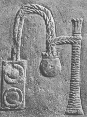
Tento hieroglyf zobrazuje písaøské náèiní a zároveò oznaèuje slovo psát. |
Egyptské písmo a jazyk
Ve vıvoji egyptského písma rozlišujeme tøi hlavní fáze - hieroglyfy, hieratické a démotické písmo. Hieroglyfy (øecky „posvátná tesaná písmena“) slou�ily jako písmo reprezentativní, a proto zdobí zdi chrámù, sochy atd. Jejich zjednodušením vzniklo písmo hieratické (øecky „knì�ské“). Tím se psalo pøedevším na papyrus (pomocí štìtce). Démotické písmo (øecky „lidové“) pùvodnì slou�ilo hlavnì k hospodáøskım záznamùm a psalo se jím napø. na støepy z hlinìnıch nádob. Nejstarší hieroglyfickı nápis pochází z roku 3100 pø.n.l. Poslední démotickı nápis je z roku 450 n.l. a byl objeven na ostrovì Fílé nedaleko Asuánu.
Hieroglyfy ani další egyptská písma rozhodnì nebyly miniaturní ilustrace (zobrazenı pøedmìt = vıznam znaku). To by je mohl èíst ka�dı! Šlo o dùmyslnı systém znakù, z nich� èást skuteènì znamenala to, co zobrazovala, další znaky ale oznaèovaly písmena nebo skupiny souhlásek, jiné gramatické tvary (napø. mno�né èíslo) a další pomocné. Speciální znaky mìly i èíslice.
|
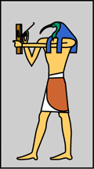
Bùh Thovt má hlavu ptáka ibise a v ruce dr�í písaøské náèiní, proto�e je pova�ován za mytického stvoøitele hieroglyfù. Je bohem písma, tajemství a Mìsíce.
|
|
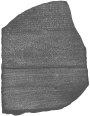
Rosettská deska (nalezena 1799) obsahuje stejnı text psanı tøemi druhy písma – hieroglyfy, démotickım písmem a øeckou alfabetou. Text je podìkováním knì�í z Memfidy faraonovi Ptolemaiovi V. za poskytnuté dobrodiní (196 pø.n.l.). K vidìní je v Britském muzeu v Londınì.
|
Rozluštìní hieroglyfù
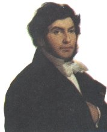Francouzskı egyptolog Jean-Francois Champollion publikoval v roce 1824 svou práci Nástin hieroglyfického systému starıch Egyp�anù, která znamenala zlom v rozluštìní egyptskıch hieroglyfù. S pomocí rosettské desky a dalších textù objevil základní zákonitosti tohoto starovìkého písma (psalo se zprava doleva, zaznamenávaly se pouze souhlásky) a rozluštil hlavní znaky.
Champollion byl vynikající lingvista a uvìdomil si, �e egyptská slova se podobají kopštinì. Tento jazyk pou�ívali hlavnì egypští køes�ané, kteøí svá díla zachycovali øeckou abecedou doplnìnou o 6 démotickıch znakù. Øecká abeceda u� mìla speciální znaky pro samohlásky, a proto se mù�eme domıšlet, jak se egyptská slova vyslovovala. Bohu�el to nebudeme moci nikdy ovìøit...
|
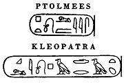
Champollion pøišel na to, �e kartuše (ovály) oznaèují jména panovníkù. Hieroglyfy v nich tedy nezastupují celá slova, ale pouze jednotlivé hlásky. Jako první rozluštil jména faraonù Ptolemaia a Kleopatry.
|
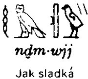
Ukázka hieroglyfického nápisu s fonetickım pøepisem a pøekladem.
Ukázky ze školních úloh písaøské školy
|
Písaøi
Povolání písaøe (úøedníka) bylo velmi cenìno. Kromì knì�í byli písaøi jediní gramotní lidé v Egyptì. Tì�ištì jejich èinnosti spoèívalo v úøedních a úèetních záznamech a opisování knih mrtvıch. Literární èinnost byla velmi okrajová. Psalo se štìtcem dvìma barvami (èernou a èervenou) na papyrové svitky, co� byl speciálnì upravenı druh rákosu. Nejdelší nalezenı svitek je dlouhı neuvìøitelnıch 40,5 metru! Šíøka byla asi 47 cm. Studenti se uèili napodobováním svıch uèitelù – nejdøíve opisovali školní úlohy, ani� by jim rozumìli, pozdìji se uèili vıznam jednotlivıch znakù (je dolo�eno pøes 6000 hieroglyfù, ale písaøi staèilo ovládnout 1000 asi nejpou�ívanìjších znakù).
|
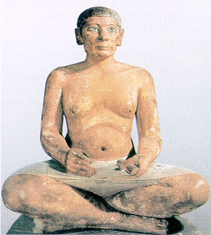
Vápencová socha písaøe (asi 2490 pø.n.l.) v typickém sedu. |
|
Další informace
Davies, W.V.: Egyptské hieroglyfy, Ètení v minulosti, pøel. Hedvika Vlasová, Volvox globator, Praha 2002
Lexa, František: Beletristická literatura staroegyptská, J.Šnajdr, Kladno 23
Lexa, František: Nábo�enská literatura staroegyptská (2 díly), Herman & synové, Praha 1997
Vachala, Bøetislav: Moudrost starého Egypta, Kni�ní podnikatelskı klub, Praha 92
Vachala, Bøetislav: Povìsti a legendy faraonského Egypta, Kni�ní podnikatelskı klub, Praha 94
Waltari, Mika: Egyp�an Sinuhet, pøel. Marta Hellmutová, Nakladatelství Josefa Šimona, Praha 96
Zamarovskı, ?: Jejich velièenstva pyramidy, ?, ?
�ába, Zbynìk: Tesáno do kamene, psáno na papyrus, Svoboda, Praha 68
|
Internetové stránky
Ancient Egypt – obrázky, informace, bohové...
Britské muzeum – Londın
Egypt – cestování, památky, mytologie...
Louvre – Paøí�
Secrets of the Pharaohs life in the ancient times – vıukovı web s animacemi
Umìní Egypta – architektura, sochaøství...
|
|